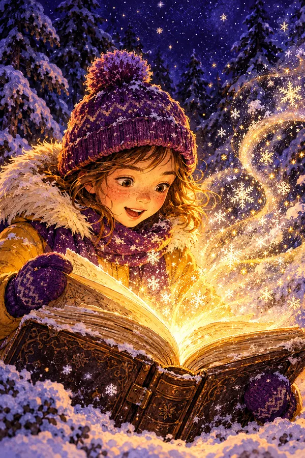
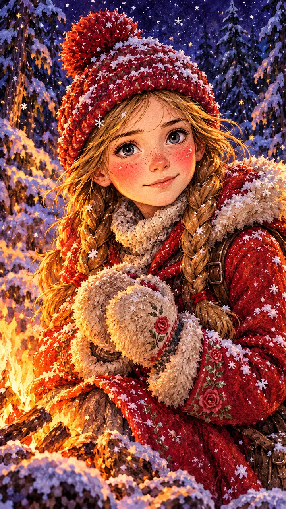
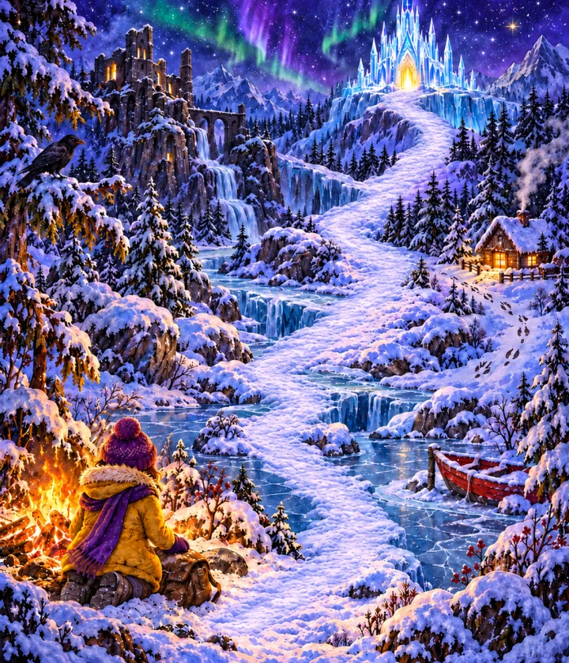
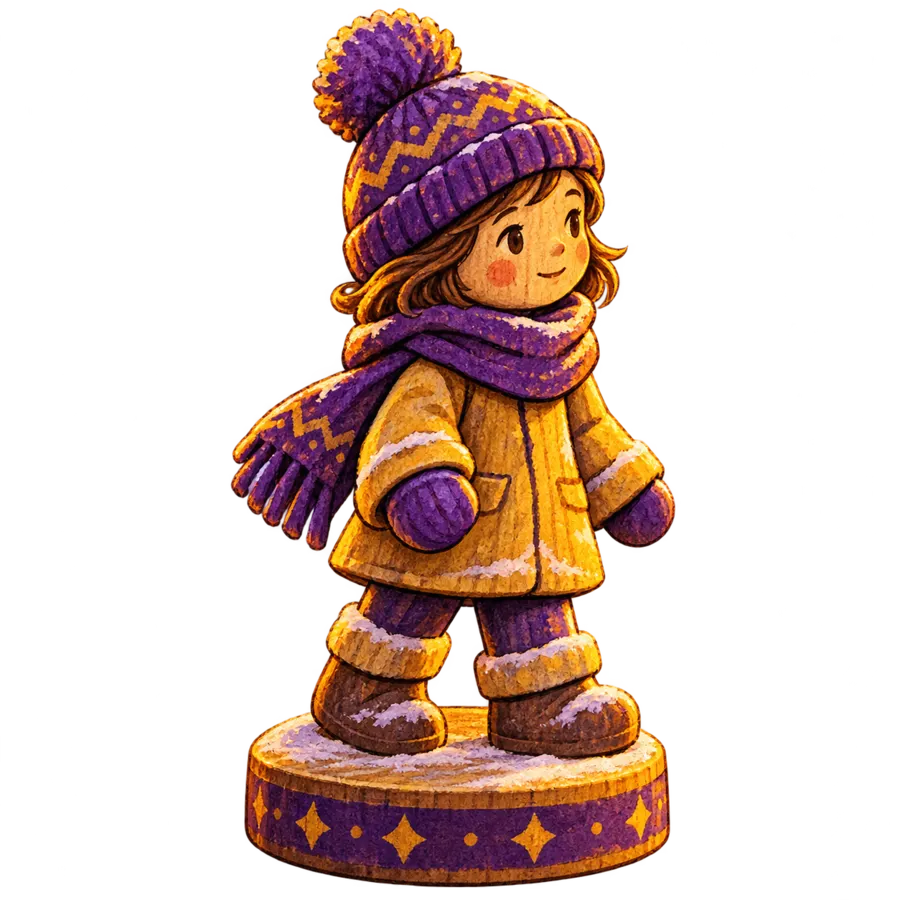
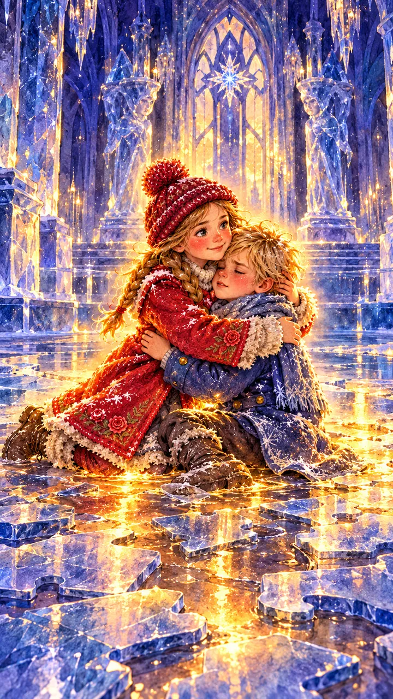
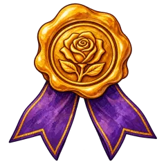
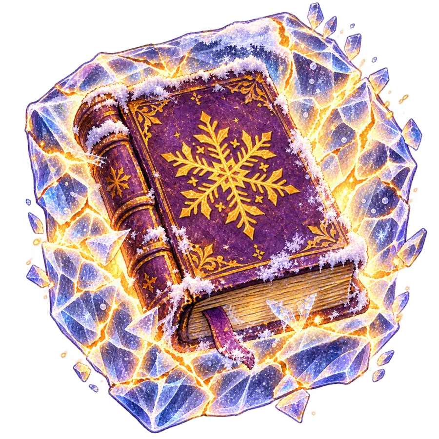

Story three. Who is playing tonight?
История 3. Выберите уровень ребёнка.

История 3 · Gerda
Ханс Кристиан Андерсен · «Снежная королева»
Listen! Someone is walking through the snow…
Включите звук
Gerda
Герда: «Я ищу своего друга Кая. Его унесла Снежная королева! Поможешь мне?»


На дороге на север спрятаны шесть замёрзших страниц. Бросай кубик!


GerdaLoyalty · «Kay, sweet little Kay!»
История 3 пройдена
Шесть страниц книги Герды оттаяли. Карточка Герды и значок «Верность» уже на полке.
- Listening, Vocabulary, Grammar
- Reading, Writing, Speaking
- Битва за значок
В ледяном дворце мыши оставили следы — и пропал ещё один кусок старой карты. Что они ищут? Завтра к костру придёт сыщик Шерлок Холмс.